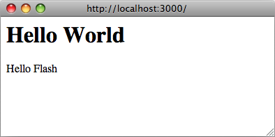
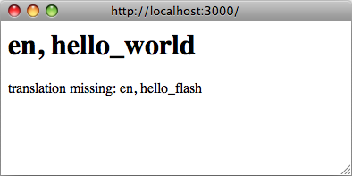
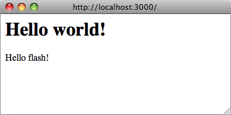
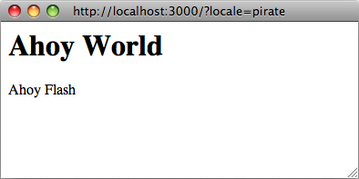
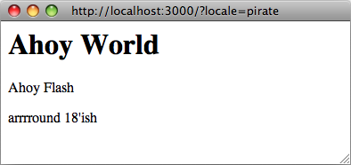
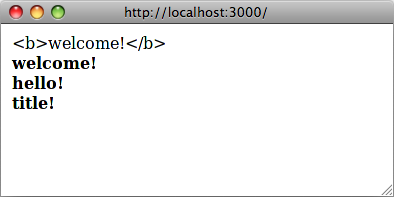

NOTA: El marco Ruby I18n le proporciona todos los medios necesarios para la internacionalización/localización de su aplicación Rails. También puede usar varias gemas disponibles para agregar funcionalidad o características adicionales. Consulte la gema rails-i18n para obtener más información.
1 Cómo Funciona I18n en Ruby on Rails
La internacionalización es un problema complejo. Los idiomas naturales difieren de muchas maneras (por ejemplo, en las reglas de pluralización) que es difícil proporcionar herramientas para resolver todos los problemas a la vez. Por esa razón, la API de I18n de Rails se centra en:
- proporcionar soporte para inglés y lenguajes similares de manera predeterminada
- facilitar la personalización y extensión de todo para otros idiomas
Como parte de esta solución, cada cadena estática en el marco de Rails - por ejemplo, mensajes de validación de Active Record, formatos de tiempo y fecha - ha sido internacionalizada. La localización de una aplicación Rails significa definir valores traducidos para estas cadenas en los idiomas deseados.
Para localizar, almacenar y actualizar contenido en su aplicación (por ejemplo, traducir publicaciones de blog), consulte la sección Traducir contenido del modelo.
1.1 La Arquitectura General de la Biblioteca
Por lo tanto, la gema Ruby I18n se divide en dos partes:
- La API pública del marco I18n - un módulo Ruby con métodos públicos que definen cómo funciona la biblioteca
- Un backend predeterminado (que se llama intencionalmente Simple backend) que implementa estos métodos
Como usuario, siempre debe acceder solo a los métodos públicos en el módulo I18n, pero es útil conocer las capacidades del backend.
NOTA: Es posible intercambiar el backend Simple enviado con uno más poderoso, que almacenaría datos de traducción en una base de datos relacional, un diccionario GetText o similar. Consulte la sección Usando diferentes backends a continuación.
1.2 La API Pública de I18n
Los métodos más importantes de la API de I18n son:
translate # Buscar traducciones de texto
localize # Localizar objetos de Fecha y Hora a formatos locales
Estos tienen los alias #t y #l, por lo que puede usarlos así:
I18n.t 'store.title'
I18n.l Time.now
También hay lectores y escritores de atributos para los siguientes atributos:
load_path # Anunciar sus archivos de traducción personalizados
locale # Obtener y establecer la configuración regional actual
default_locale # Obtener y establecer la configuración regional predeterminada
available_locales # Configuraciones regionales permitidas disponibles para la aplicación
enforce_available_locales # Hacer cumplir el permiso de configuración regional (verdadero o falso)
exception_handler # Usar un exception_handler diferente
backend # Usar un backend diferente
¡Así que internacionalicemos una aplicación Rails simple desde cero en los próximos capítulos!
2 Configurar la Aplicación Rails para la Internacionalización
Hay algunos pasos para comenzar a funcionar con soporte I18n para una aplicación Rails.
2.1 Configurar el Módulo I18n
Siguiendo la filosofía convención sobre configuración, Rails I18n proporciona cadenas de traducción predeterminadas razonables. Cuando se necesitan diferentes cadenas de traducción, se pueden sobrescribir.
Rails agrega automáticamente todos los archivos .rb y .yml del directorio config/locales a la ruta de carga de traducciones.
La configuración regional predeterminada en.yml en este directorio contiene un par de cadenas de traducción de muestra:
en:
hello: "Hello world"
Esto significa que en la configuración regional :en, la clave hello se mapeará a la cadena Hello world. Cada cadena dentro de Rails está internacionalizada de esta manera, vea, por ejemplo, los mensajes de validación de Active Model en el archivo activemodel/lib/active_model/locale/en.yml o los formatos de tiempo y fecha en el archivo activesupport/lib/active_support/locale/en.yml. Puede usar YAML o Hashes estándar de Ruby para almacenar traducciones en el backend predeterminado (Simple).
La biblioteca I18n usará inglés como configuración regional predeterminada, es decir, si no se establece una configuración regional diferente, se usará :en para buscar traducciones.
NOTA: La biblioteca i18n adopta un enfoque pragmático para las claves de configuración regional (después de alguna discusión), incluyendo solo la parte locale ("idioma"), como :en, :pl, no la parte región, como :"en-US" o :"en-GB", que tradicionalmente se utilizan para separar "idiomas" y "configuración regional" o "dialectos". Muchas aplicaciones internacionales usan solo el elemento "idioma" de una configuración regional como :cs, :th, o :es (para checo, tailandés y español). Sin embargo, también hay diferencias regionales dentro de diferentes grupos de idiomas que pueden ser importantes. Por ejemplo, en la configuración regional :"en-US" tendría $ como símbolo de moneda, mientras que en :"en-GB", tendría £. Nada le impide separar configuraciones regionales y otras configuraciones de esta manera: solo tiene que proporcionar la configuración regional completa de "Inglés - Reino Unido" en un diccionario :"en-GB".
La ruta de carga de traducciones (I18n.load_path) es una matriz de rutas a archivos que se cargarán automáticamente. Configurar esta ruta permite la personalización de la estructura del directorio de traducciones y el esquema de nombres de archivos.
NOTA: El backend carga perezosamente estas traducciones cuando se busca una traducción por primera vez. Este backend se puede intercambiar por otro incluso después de que las traducciones ya se hayan anunciado.
Puede cambiar la configuración regional predeterminada, así como configurar las rutas de carga de traducciones en config/application.rb de la siguiente manera:
config.i18n.load_path += Dir[Rails.root.join('my', 'locales', '*.{rb,yml}')]
config.i18n.default_locale = :de
La ruta de carga debe especificarse antes de que se busquen las traducciones. Para cambiar la configuración regional predeterminada desde un inicializador en lugar de config/application.rb:
# config/initializers/locale.rb
# Dónde debería buscar la biblioteca I18n archivos de traducción
I18n.load_path += Dir[Rails.root.join('lib', 'locale', '*.{rb,yml}')]
# Configuraciones regionales permitidas disponibles para la aplicación
I18n.available_locales = [:en, :pt]
# Establecer la configuración regional predeterminada en algo diferente a :en
I18n.default_locale = :pt
Tenga en cuenta que al agregar directamente a I18n.load_path en lugar de a la configuración de I18n de la aplicación, no se sobrescribirán las traducciones de gemas externas.
2.2 Gestionar la Configuración Regional entre Solicitudes
Una aplicación localizada probablemente necesitará proporcionar soporte para múltiples configuraciones regionales. Para lograr esto, la configuración regional debe establecerse al comienzo de cada solicitud para que todas las cadenas se traduzcan utilizando la configuración regional deseada durante la duración de esa solicitud.
La configuración regional predeterminada se utiliza para todas las traducciones a menos que se use I18n.locale= o I18n.with_locale.
I18n.locale puede filtrarse en solicitudes posteriores atendidas por el mismo hilo/proceso si no se establece de manera consistente en cada controlador. Por ejemplo, ejecutar I18n.locale = :es en una solicitud POST tendrá efectos para todas las solicitudes posteriores a controladores que no establezcan la configuración regional, pero solo en ese hilo/proceso en particular. Por esa razón, en lugar de I18n.locale = puede usar I18n.with_locale que no tiene este problema de fuga.
La configuración regional se puede establecer en una around_action en el ApplicationController:
around_action :switch_locale
def switch_locale(&action)
locale = params[:locale] || I18n.default_locale
I18n.with_locale(locale, &action)
end
Este ejemplo ilustra el uso de un parámetro de consulta de URL para establecer la configuración regional (por ejemplo, http://example.com/books?locale=pt). Con este enfoque, http://localhost:3000?locale=pt renderiza la localización en portugués, mientras que http://localhost:3000?locale=de carga una localización en alemán.
La configuración regional se puede establecer utilizando uno de varios enfoques diferentes.
2.2.1 Establecer la Configuración Regional desde el Nombre de Dominio
Una opción que tiene es establecer la configuración regional desde el nombre de dominio donde se ejecuta su aplicación. Por ejemplo, queremos que www.example.com cargue la configuración regional en inglés (o predeterminada) y www.example.es cargue la configuración regional en español. Así, el nombre de dominio de nivel superior se utiliza para establecer la configuración regional. Esto tiene varias ventajas:
- La configuración regional es una parte obvia de la URL.
- Las personas comprenden intuitivamente en qué idioma se mostrará el contenido.
- Es muy trivial de implementar en Rails.
- Los motores de búsqueda parecen gustar de que el contenido en diferentes idiomas viva en diferentes dominios interconectados.
Puede implementarlo así en su ApplicationController:
around_action :switch_locale
def switch_locale(&action)
locale = extract_locale_from_tld || I18n.default_locale
I18n.with_locale(locale, &action)
end
# Obtener la configuración regional del dominio de nivel superior o devolver +nil+ si dicha configuración regional no está disponible
# Debe poner algo como:
# 127.0.0.1 application.com
# 127.0.0.1 application.it
# 127.0.0.1 application.pl
# en su archivo /etc/hosts para probar esto localmente
def extract_locale_from_tld
parsed_locale = request.host.split('.').last
I18n.available_locales.map(&:to_s).include?(parsed_locale) ? parsed_locale : nil
end
También podemos establecer la configuración regional desde el subdominio de una manera muy similar:
# Obtener el código de configuración regional del subdominio de la solicitud (como http://it.application.local:3000)
# Debe poner algo como:
# 127.0.0.1 gr.application.local
# en su archivo /etc/hosts para probar esto localmente
def extract_locale_from_subdomain
parsed_locale = request.subdomains.first
I18n.available_locales.map(&:to_s).include?(parsed_locale) ? parsed_locale : nil
end
Si su aplicación incluye un menú de cambio de configuración regional, tendría algo como esto en él:
link_to("Deutsch", "#{APP_CONFIG[:deutsch_website_url]}#{request.env['PATH_INFO']}")
asumiendo que establecería APP_CONFIG[:deutsch_website_url] en algún valor como http://www.application.de.
Esta solución tiene las ventajas mencionadas anteriormente, sin embargo, puede que no pueda o no quiera proporcionar diferentes localizaciones ("versiones de idioma") en diferentes dominios. La solución más obvia sería incluir el código de configuración regional en los parámetros de la URL (o en la ruta de solicitud).
2.2.2 Establecer la Configuración Regional desde los Parámetros de la URL
La forma más habitual de establecer (y pasar) la configuración regional sería incluirla en los parámetros de la URL, como hicimos en el around_action I18n.with_locale(params[:locale], &action) en el primer ejemplo. Nos gustaría tener URLs como www.example.com/books?locale=ja o www.example.com/ja/books en este caso.
Este enfoque tiene casi el mismo conjunto de ventajas que establecer la configuración regional desde el nombre de dominio: a saber, que es RESTful y está de acuerdo con el resto de la World Wide Web. Sin embargo, requiere un poco más de trabajo para implementar.
Obtener la configuración regional de params y establecerla en consecuencia no es difícil; incluirla en cada URL y, por lo tanto, pasarla a través de las solicitudes sí lo es. Incluir una opción explícita en cada URL, por ejemplo, link_to(books_url(locale: I18n.locale)), sería tedioso y probablemente imposible, por supuesto.
Rails contiene infraestructura para "centralizar decisiones dinámicas sobre las URLs" en su ApplicationController#default_url_options, que es útil precisamente en este escenario: nos permite establecer "predeterminados" para url_for y métodos auxiliares dependientes de él (implementando/sobrescribiendo default_url_options).
Podemos incluir algo como esto en nuestro ApplicationController entonces:
# app/controllers/application_controller.rb
def default_url_options
{ locale: I18n.locale }
end
Cada método auxiliar dependiente de url_for (por ejemplo, auxiliares para rutas nombradas como root_path o root_url, rutas de recursos como books_path o books_url, etc.) ahora incluirá automáticamente la configuración regional en la cadena de consulta, así: http://localhost:3001/?locale=ja.
Puede estar satisfecho con esto. Sin embargo, afecta la legibilidad de las URLs, cuando la configuración regional "cuelga" al final de cada URL en su aplicación. Además, desde el punto de vista arquitectónico, la configuración regional generalmente está jerárquicamente por encima de las otras partes del dominio de la aplicación: y las URLs deberían reflejar esto.
Probablemente desee que las URLs se vean así: http://www.example.com/en/books (que carga la configuración regional en inglés) y http://www.example.com/nl/books (que carga la configuración regional en neerlandés). Esto se puede lograr con la estrategia de "sobrescribir default_url_options" desde arriba: solo tiene que configurar sus rutas con scope:
# config/routes.rb
scope "/:locale" do
resources :books
end
Ahora, cuando llame al método books_path debería obtener "/en/books" (para la configuración regional predeterminada). Una URL como http://localhost:3001/nl/books debería cargar la configuración regional en neerlandés, entonces, y las llamadas posteriores a books_path deberían devolver "/nl/books" (porque la configuración regional cambió).
ADVERTENCIA. Dado que el valor de retorno de default_url_options se almacena en caché por solicitud, las URLs en un selector de configuración regional no se pueden generar invocando auxiliares en un bucle que establece el I18n.locale correspondiente en cada iteración. En su lugar, deje I18n.locale sin tocar y pase una opción :locale explícita al auxiliar, o edite request.original_fullpath.
Si no desea forzar el uso de una configuración regional en sus rutas, puede usar un alcance de ruta opcional (denotado por los paréntesis) así:
# config/routes.rb
scope "(:locale)", locale: /en|nl/ do
resources :books
end
Con este enfoque, no obtendrá un Routing Error al acceder a sus recursos como http://localhost:3001/books sin una configuración regional. Esto es útil cuando desea usar la configuración regional predeterminada cuando no se especifica una.
Por supuesto, debe tener especial cuidado con la URL raíz (generalmente "página de inicio" o "tablero") de su aplicación. Una URL como http://localhost:3001/nl no funcionará automáticamente, porque la declaración root to: "dashboard#index" en su routes.rb no toma en cuenta la configuración regional. (Y con razón: solo hay una URL "raíz").
Probablemente necesitaría mapear URLs como estas:
# config/routes.rb
get '/:locale' => 'dashboard#index'
Tome especial cuidado con el orden de sus rutas, para que esta declaración de ruta no "coma" otras. (Es posible que desee agregarla directamente antes de la declaración root :to).
NOTA: Eche un vistazo a varias gemas que simplifican el trabajo con rutas: routing_filter, route_translator.
2.2.3 Establecer la Configuración Regional desde las Preferencias del Usuario
Una aplicación con usuarios autenticados puede permitir que los usuarios establezcan una preferencia de configuración regional a través de la interfaz de la aplicación. Con este enfoque, la preferencia de configuración regional seleccionada por un usuario se guarda en la base de datos y se utiliza para establecer la configuración regional para solicitudes autenticadas por ese usuario.
around_action :switch_locale
def switch_locale(&action)
locale = current_user.try(:locale) || I18n.default_locale
I18n.with_locale(locale, &action)
end
2.2.4 Elegir una Configuración Regional Implícita
Cuando no se ha establecido una configuración regional explícita para una solicitud (por ejemplo, a través de uno de los métodos anteriores), una aplicación debería intentar inferir la configuración regional deseada.
2.2.4.1 Inferir la Configuración Regional desde el Encabezado de Idioma
El encabezado HTTP Accept-Language indica el idioma preferido para la respuesta de la solicitud. Los navegadores establecen este valor de encabezado según la configuración de preferencia de idioma del usuario, lo que lo convierte en una buena primera opción al inferir una configuración regional.
Una implementación trivial del uso de un encabezado Accept-Language sería:
def switch_locale(&action)
logger.debug "* Accept-Language: #{request.env['HTTP_ACCEPT_LANGUAGE']}"
locale = extract_locale_from_accept_language_header
logger.debug "* Locale set to '#{locale}'"
I18n.with_locale(locale, &action)
end
private
def extract_locale_from_accept_language_header
request.env['HTTP_ACCEPT_LANGUAGE'].scan(/^[a-z]{2}/).first
end
En la práctica, se necesita un código más robusto para hacer esto de manera confiable. La biblioteca http_accept_language de Iain Hecker o el middleware Rack locale de Ryan Tomayko proporcionan soluciones a este problema.
2.2.4.2 Inferir la Configuración Regional desde la Geolocalización por IP
La dirección IP del cliente que realiza la solicitud se puede utilizar para inferir la región del cliente y, por lo tanto, su configuración regional. Servicios como GeoLite2 Country o gemas como geocoder se pueden usar para implementar este enfoque.
En general, este enfoque es mucho menos confiable que usar el encabezado de idioma y no se recomienda para la mayoría de las aplicaciones web.
2.2.5 Almacenar la Configuración Regional en la Sesión o Cookies
ADVERTENCIA: Puede sentirse tentado a almacenar la configuración regional elegida en una sesión o una cookie. Sin embargo, no lo haga. La configuración regional debe ser transparente y formar parte de la URL. De esta manera, no romperá las suposiciones básicas de las personas sobre la web misma: si envía una URL a un amigo, deberían ver la misma página y contenido que usted. Una palabra elegante para esto sería que está siendo RESTful. Lea más sobre el enfoque RESTful en los artículos de Stefan Tilkov. A veces hay excepciones a esta regla y se discuten a continuación.
3 Internacionalización y Localización
¡OK! Ahora ha inicializado el soporte I18n para su aplicación Ruby on Rails y le ha indicado qué configuración regional usar y cómo preservarla entre solicitudes.
A continuación, necesitamos internacionalizar nuestra aplicación abstrayendo cada elemento específico de la configuración regional. Finalmente, necesitamos localizarla proporcionando las traducciones necesarias para estos abstractos.
Dado el siguiente ejemplo:
# config/routes.rb
Rails.application.routes.draw do
root to: "home#index"
end
# app/controllers/application_controller.rb
class ApplicationController < ActionController::Base
around_action :switch_locale
def switch_locale(&action)
locale = params[:locale] || I18n.default_locale
I18n.with_locale(locale, &action)
end
end
# app/controllers/home_controller.rb
class HomeController < ApplicationController
def index
flash[:notice] = "Hello Flash"
end
end
<!-- app/views/home/index.html.erb -->
<h1>Hello World</h1>
<p><%= flash[:notice] %></p>

3.1 Abstraer Código Localizado
En nuestro código, hay dos cadenas escritas en inglés que se mostrarán en nuestra respuesta ("Hello Flash" y "Hello World"). Para internacionalizar este código, estas cadenas deben reemplazarse por llamadas al auxiliar #t de Rails con una clave adecuada para cada cadena:
# app/controllers/home_controller.rb
class HomeController < ApplicationController
def index
flash[:notice] = t(:hello_flash)
end
end
<!-- app/views/home/index.html.erb -->
<h1><%= t :hello_world %></h1>
<p><%= flash[:notice] %></p>
Ahora, cuando se renderice esta vista, mostrará un mensaje de error que le indicará que faltan las traducciones para las claves :hello_world y :hello_flash.

NOTA: Rails agrega un método auxiliar t (translate) a sus vistas para que no necesite escribir I18n.t todo el tiempo. Además, este auxiliar capturará traducciones faltantes y envolverá el mensaje de error resultante en un <span class="translation_missing">.
3.2 Proporcionar Traducciones para Cadenas Internacionalizadas
Agregue las traducciones faltantes en los archivos de diccionario de traducción:
# config/locales/en.yml
en:
hello_world: Hello world!
hello_flash: Hello flash!
# config/locales/pirate.yml
pirate:
hello_world: Ahoy World
hello_flash: Ahoy Flash
Debido a que la default_locale no ha cambiado, las traducciones usan la configuración regional :en y la respuesta renderiza las cadenas en inglés:

Si la configuración regional se establece a través de la URL en la configuración regional pirata (http://localhost:3000?locale=pirate), la respuesta renderiza las cadenas piratas:

NOTA: Debe reiniciar el servidor cuando agregue nuevos archivos de configuración regional.
Puede usar archivos YAML (.yml) o Ruby simples (.rb) para almacenar sus traducciones en SimpleStore. YAML es la opción preferida entre los desarrolladores de Rails. Sin embargo, tiene una gran desventaja. YAML es muy sensible al espacio en blanco y caracteres especiales, por lo que la aplicación puede no cargar su diccionario correctamente. Los archivos Ruby harán que su aplicación se bloquee en la primera solicitud, por lo que puede encontrar fácilmente qué está mal. (Si encuentra algún "problema extraño" con los diccionarios YAML, intente poner la parte relevante de su diccionario en un archivo Ruby).
Si sus traducciones están almacenadas en archivos YAML, ciertas claves deben escaparse. Son:
- true, on, yes
- false, off, no
Ejemplos:
# config/locales/en.yml
en:
success:
'true': 'True!'
'on': 'On!'
'false': 'False!'
failure:
true: 'True!'
off: 'Off!'
false: 'False!'
I18n.t 'success.true' # => 'True!'
I18n.t 'success.on' # => 'On!'
I18n.t 'success.false' # => 'False!'
I18n.t 'failure.false' # => Translation Missing
I18n.t 'failure.off' # => Translation Missing
I18n.t 'failure.true' # => Translation Missing
3.3 Pasar Variables a Traducciones
Una consideración clave para internacionalizar con éxito una aplicación es evitar hacer suposiciones incorrectas sobre las reglas gramaticales al abstraer código localizado. Las reglas gramaticales que parecen fundamentales en una configuración regional pueden no ser válidas en otra.
La abstracción incorrecta se muestra en el siguiente ejemplo, donde se hacen suposiciones sobre el orden de las diferentes partes de la traducción. Tenga en cuenta que Rails proporciona un auxiliar number_to_currency para manejar el siguiente caso.
<!-- app/views/products/show.html.erb -->
<%= "#{t('currency')}#{@product.price}" %>
# config/locales/en.yml
en:
currency: "$"
# config/locales/es.yml
es:
currency: "€"
Si el precio del producto es 10, la traducción adecuada para el español es "10 €" en lugar de "€10", pero la abstracción no puede darlo.
Para crear una abstracción adecuada, la gema I18n viene con una característica llamada interpolación de variables que le permite usar variables en definiciones de traducción y pasar los valores de estas variables al método de traducción.
La abstracción adecuada se muestra en el siguiente ejemplo:
<!-- app/views/products/show.html.erb -->
<%= t('product_price', price: @product.price) %>
# config/locales/en.yml
en:
product_price: "$%{price}"
# config/locales/es.yml
es:
product_price: "%{price} €"
Todas las decisiones gramaticales y de puntuación se toman en la definición misma, por lo que la abstracción puede dar una traducción adecuada.
NOTA: Las palabras clave default y scope están reservadas y no se pueden usar como nombres de variables. Si se usan, se genera una excepción I18n::ReservedInterpolationKey. Si una traducción espera una variable de interpolación, pero no se ha pasado a #translate, se genera una excepción I18n::MissingInterpolationArgument.
3.4 Agregar Formatos de Fecha/Hora
¡OK! Ahora agreguemos una marca de tiempo a la vista, para que podamos demostrar también la función de localización de fecha/hora. Para localizar el formato de tiempo, pase el objeto Time a I18n.l o (preferiblemente) use el auxiliar #l de Rails. Puede elegir un formato pasando la opción :format - por defecto se usa el formato :default.
<!-- app/views/home/index.html.erb -->
<h1><%= t :hello_world %></h1>
<p><%= flash[:notice] %></p>
<p><%= l Time.now, format: :short %></p>
Y en nuestro archivo de traducciones pirata, agreguemos un formato de tiempo (ya está en los valores predeterminados de Rails para inglés):
# config/locales/pirate.yml
pirate:
time:
formats:
short: "arrrround %H'ish"
Así que eso le daría:

CONSEJO: En este momento, es posible que necesite agregar algunos formatos de fecha/hora más para que el backend de I18n funcione como se espera (al menos para la configuración regional 'pirata'). Por supuesto, hay una gran posibilidad de que alguien ya haya hecho todo el trabajo al traducir los valores predeterminados de Rails para su configuración regional. Consulte el repositorio rails-i18n en GitHub para un archivo de varios archivos de configuración regional. Cuando coloca dicho(s) archivo(s) en el directorio config/locales/, estarán automáticamente listos para su uso.
3.5 Reglas de Inflección para Otras Configuraciones Regionales
Rails le permite definir reglas de inflección (como reglas para singularización y pluralización) para configuraciones regionales distintas del inglés. En config/initializers/inflections.rb, puede definir estas reglas para múltiples configuraciones regionales. El inicializador contiene un ejemplo predeterminado para especificar reglas adicionales para inglés; siga ese formato para otras configuraciones regionales según lo considere necesario.
3.6 Vistas Localizadas
Supongamos que tiene un BooksController en su aplicación. Su acción index renderiza contenido en la plantilla app/views/books/index.html.erb. Cuando coloca una variante localizada de esta plantilla: index.es.html.erb en el mismo directorio, Rails renderizará el contenido en esta plantilla cuando la configuración regional se establezca en :es. Cuando la configuración regional se establezca en la configuración regional predeterminada, se usará la vista genérica index.html.erb. (Las versiones futuras de Rails pueden traer esta localización automágica a los activos en public, etc.)
Puede hacer uso de esta función, por ejemplo, cuando trabaje con una gran cantidad de contenido estático, que sería torpe colocar dentro de diccionarios YAML o Ruby. Tenga en cuenta, sin embargo, que cualquier cambio que desee hacer más adelante en la plantilla debe propagarse a todas ellas.
3.7 Organización de Archivos de Configuración Regional
Cuando está utilizando el SimpleStore predeterminado enviado con la biblioteca i18n, los diccionarios se almacenan en archivos de texto plano en el disco. Poner traducciones para todas las partes de su aplicación en un archivo por configuración regional podría ser difícil de gestionar. Puede almacenar estos archivos en una jerarquía que tenga sentido para usted.
Por ejemplo, su directorio config/locales podría verse así:
|-defaults
|---es.yml
|---en.yml
|-models
|---book
|-----es.yml
|-----en.yml
|-views
|---defaults
|-----es.yml
|-----en.yml
|---books
|-----es.yml
|-----en.yml
|---users
|-----es.yml
|-----en.yml
|---navigation
|-----es.yml
|-----en.yml
De esta manera, puede separar nombres de modelos y atributos de modelos del texto dentro de las vistas, y todo esto de los "predeterminados" (por ejemplo, formatos de fecha y hora). Otros almacenes para la biblioteca i18n podrían proporcionar diferentes medios de tal separación.
NOTA: El mecanismo de carga de configuraciones regionales predeterminado en Rails no carga archivos de configuración regional en diccionarios anidados, como tenemos aquí. Entonces, para que esto funcione, debemos decirle explícitamente a Rails que busque más allá:
# config/application.rb
config.i18n.load_path += Dir[Rails.root.join('config', 'locales', '**', '*.{rb,yml}')]
4 Resumen de las Funciones de la API de I18n
Ahora debería tener una buena comprensión de cómo usar la biblioteca i18n y saber cómo internacionalizar una aplicación Rails básica. En los siguientes capítulos, cubriremos sus características con más profundidad.
Estos capítulos mostrarán ejemplos utilizando tanto el método I18n.translate como el método auxiliar translate de la vista (notando las características adicionales proporcionadas por el método auxiliar de la vista).
Se cubren características como estas:
- búsqueda de traducciones
- interpolación de datos en traducciones
- pluralización de traducciones
- uso de traducciones HTML seguras (solo método auxiliar de vista)
- localización de fechas, números, moneda, etc.
4.1 Búsqueda de Traducciones
4.1.1 Búsqueda Básica, Ámbitos y Claves Anidadas
Las traducciones se buscan por claves que pueden ser tanto Símbolos como Cadenas, por lo que estas llamadas son equivalentes:
I18n.t :message
I18n.t 'message'
El método translate también toma una opción :scope que puede contener una o más claves adicionales que se utilizarán para especificar un "namespace" o ámbito para una clave de traducción:
I18n.t :record_invalid, scope: [:activerecord, :errors, :messages]
Esto busca el mensaje :record_invalid en los mensajes de error de Active Record.
Además, tanto la clave como los ámbitos se pueden especificar como claves separadas por puntos, como en:
I18n.translate "activerecord.errors.messages.record_invalid"
Por lo tanto, las siguientes llamadas son equivalentes:
I18n.t 'activerecord.errors.messages.record_invalid'
I18n.t 'errors.messages.record_invalid', scope: :activerecord
I18n.t :record_invalid, scope: 'activerecord.errors.messages'
I18n.t :record_invalid, scope: [:activerecord, :errors, :messages]
4.1.2 Valores Predeterminados
Cuando se da una opción :default, su valor se devolverá si falta la traducción:
I18n.t :missing, default: 'Not here'
# => 'Not here'
Si el valor de :default es un Símbolo, se usará como clave y se traducirá. Se pueden proporcionar múltiples valores como predeterminados. Se devolverá el primero que resulte en un valor.
Por ejemplo, lo siguiente primero intenta traducir la clave :missing y luego la clave :also_missing. Como ambos no dan un resultado, se devolverá la cadena "Not here":
I18n.t :missing, default: [:also_missing, 'Not here']
# => 'Not here'
4.1.3 Búsqueda Masiva y de Espacios de Nombres
Para buscar múltiples traducciones a la vez, se puede pasar una matriz de claves:
I18n.t [:odd, :even], scope: 'errors.messages'
# => ["must be odd", "must be even"]
Además, una clave puede traducirse a un hash (potencialmente anidado) de traducciones agrupadas. Por ejemplo, se pueden recibir todos los mensajes de error de Active Record como un Hash con:
I18n.t 'errors.messages'
# => {:inclusion=>"is not included in the list", :exclusion=> ... }
Si desea realizar interpolación en un hash masivo de traducciones, necesita pasar deep_interpolation: true como un parámetro. Cuando tiene el siguiente diccionario:
en:
welcome:
title: "Welcome!"
content: "Welcome to the %{app_name}"
entonces la interpolación anidada se ignorará sin la configuración:
I18n.t 'welcome', app_name: 'book store'
# => {:title=>"Welcome!", :content=>"Welcome to the %{app_name}"}
I18n.t 'welcome', deep_interpolation: true, app_name: 'book store'
# => {:title=>"Welcome!", :content=>"Welcome to the book store"}
4.1.4 Búsqueda "Perezosa"
Rails implementa una forma conveniente de buscar la configuración regional dentro de vistas. Cuando tiene el siguiente diccionario:
es:
books:
index:
title: "Título"
puede buscar el valor books.index.title dentro de la plantilla app/views/books/index.html.erb así (note el punto):
<%= t '.title' %>
NOTA: El ámbito automático de traducción por parcial solo está disponible desde el método auxiliar de vista translate.
La búsqueda "perezosa" también se puede usar en controladores:
en:
books:
create:
success: Book created!
Esto es útil para establecer mensajes flash, por ejemplo:
class BooksController < ApplicationController
def create
# ...
redirect_to books_url, notice: t('.success')
end
end
4.2 Pluralización
En muchos idiomas, incluido el inglés, solo hay dos formas, una singular y una plural, para una cadena dada, por ejemplo, "1 message" y "2 messages". Otros idiomas (Árabe, Japonés, Ruso y muchos más) tienen gramáticas diferentes que tienen formas plurales adicionales o menos. Por lo tanto, la API de I18n proporciona una función de pluralización flexible.
La variable de interpolación :count tiene un papel especial en el que se interpola en la traducción y se utiliza para elegir una pluralización de las traducciones de acuerdo con las reglas de pluralización definidas en el backend de pluralización. Por defecto, solo se aplican las reglas de pluralización en inglés.
I18n.backend.store_translations :en, inbox: {
zero: 'no messages', # opcional
one: 'one message',
other: '%{count} messages'
}
I18n.translate :inbox, count: 2
# => '2 messages'
I18n.translate :inbox, count: 1
# => 'one message'
I18n.translate :inbox, count: 0
# => 'no messages'
El algoritmo para pluralizaciones en :en es tan simple como:
lookup_key = :zero if count == 0 && entry.has_key?(:zero)
lookup_key ||= count == 1 ? :one : :other
entry[lookup_key]
La traducción denotada como :one se considera singular, y :other se usa como plural. Si el conteo es cero, y hay una entrada :zero presente, entonces se usará en lugar de :other.
Si la búsqueda de la clave no devuelve un Hash adecuado para la pluralización, se genera una excepción I18n::InvalidPluralizationData.
4.2.1 Reglas Específicas de Configuración Regional
La gema I18n proporciona un backend de Pluralización que se puede usar para habilitar reglas específicas de configuración regional. Inclúyala en el backend Simple, luego agregue los algoritmos de pluralización localizados al almacén de traducción, como i18n.plural.rule.
I18n::Backend::Simple.include(I18n::Backend::Pluralization)
I18n.backend.store_translations :pt, i18n: { plural: { rule: lambda { |n| [0, 1].include?(n) ? :one : :other } } }
I18n.backend.store_translations :pt, apples: { one: 'one or none', other: 'more than one' }
I18n.t :apples, count: 0, locale: :pt
# => 'one or none'
Alternativamente, la gema separada rails-i18n se puede usar para proporcionar un conjunto más completo de reglas de pluralización específicas de configuración regional.
4.3 Establecer y Pasar una Configuración Regional
La configuración regional se puede establecer pseudo-globalmente en I18n.locale (que usa Thread.current de la misma manera que, por ejemplo, Time.zone) o se puede pasar como una opción a #translate y #localize.
Si no se pasa una configuración regional, se usa I18n.locale:
I18n.locale = :de
I18n.t :foo
I18n.l Time.now
Pasar explícitamente una configuración regional:
I18n.t :foo, locale: :de
I18n.l Time.now, locale: :de
El I18n.locale predetermina a I18n.default_locale que predetermina a :en. La configuración regional predeterminada se puede establecer así:
I18n.default_locale = :de
4.4 Usar Traducciones HTML Seguras
Las claves con un sufijo '_html' y las claves nombradas 'html' se marcan como HTML seguro. Cuando las usa en vistas, el HTML no se escapará.
# config/locales/en.yml
en:
welcome: <b>welcome!</b>
hello_html: <b>hello!</b>
title:
html: <b>title!</b>
<!-- app/views/home/index.html.erb -->
<div><%= t('welcome') %></div>
<div><%= raw t('welcome') %></div>
<div><%= t('hello_html') %></div>
<div><%= t('title.html') %></div>
Sin embargo, la interpolación escapa según sea necesario. Por ejemplo, dado:
en:
welcome_html: "<b>Welcome %{username}!</b>"
puede pasar de manera segura el nombre de usuario tal como lo establece el usuario:
<%# Esto es seguro, se escapará si es necesario. %>
<%= t('welcome_html', username: @current_user.username) %>
Las cadenas seguras, por otro lado, se interpolan tal cual.
NOTA: La conversión automática a texto traducido seguro para HTML solo está disponible desde el método auxiliar translate (o t). Esto funciona en vistas y controladores.

4.5 Traducciones para Modelos de Active Record
Puede usar los métodos Model.model_name.human y Model.human_attribute_name(attribute) para buscar de manera transparente traducciones para los nombres de sus modelos y atributos.
Por ejemplo, cuando agrega las siguientes traducciones:
en:
activerecord:
models:
user: Customer
attributes:
user:
login: "Handle"
# traducirá el atributo "login" de User como "Handle"
Entonces User.model_name.human devolverá "Customer" y User.human_attribute_name("login") devolverá "Handle".
También puede establecer una forma plural para los nombres de modelo, agregando lo siguiente:
en:
activerecord:
models:
user:
one: Customer
other: Customers
Entonces User.model_name.human(count: 2) devolverá "Customers". Con count: 1 o sin parámetros devolverá "Customer".
En el caso de que necesite acceder a atributos anidados dentro de un modelo dado, debe anidarlos bajo model/attribute en el nivel del modelo de su archivo de traducción:
en:
activerecord:
attributes:
user/role:
admin: "Admin"
contributor: "Contributor"
Entonces User.human_attribute_name("role.admin") devolverá "Admin".
NOTA: Si está usando una clase que incluye ActiveModel y no hereda de ActiveRecord::Base, reemplace activerecord con activemodel en las rutas de clave anteriores.
4.5.1 Ámbitos de Mensajes de Error
Los mensajes de error de validación de Active Record también se pueden traducir fácilmente. Active Record le da un par de espacios de nombres donde puede colocar sus traducciones de mensajes para proporcionar diferentes mensajes y traducciones para ciertos modelos, atributos y/o validaciones. También tiene en cuenta de manera transparente la herencia de tablas individuales.
Esto le da medios bastante poderosos para ajustar de manera flexible sus mensajes a las necesidades de su aplicación.
Considere un modelo User con una validación para el atributo name como este:
class User < ApplicationRecord
validates :name, presence: true
end
La clave para el mensaje de error en este caso es :blank. Por lo tanto, en nuestro ejemplo, intentará las siguientes claves en este orden y devolverá el primer resultado:
activerecord.errors.models.user.attributes.name.blank
activerecord.errors.models.user.blank
activerecord.errors.messages.blank
errors.attributes.name.blank
errors.messages.blank
Para explicarlo de manera más abstracta, devuelve la primera clave que coincide en el orden de la siguiente lista.
activerecord.errors.models.[model_name].attributes.[attribute_name].[key]
activerecord.errors.models.[model_name].[key]
activerecord.errors.messages.[key]
errors.attributes.[attribute_name].[key]
errors.messages.[key]
Cuando sus modelos están usando además herencia, entonces los mensajes se buscan en la cadena de herencia.
Por ejemplo, puede tener un modelo Admin que hereda de User:
class Admin < User
validates :name, presence: true
end
Entonces Active Record buscará mensajes en este orden:
activerecord.errors.models.admin.attributes.name.blank
activerecord.errors.models.admin.blank
activerecord.errors.models.user.attributes.name.blank
activerecord.errors.models.user.blank
activerecord.errors.messages.blank
errors.attributes.name.blank
errors.messages.blank
De esta manera, puede proporcionar traducciones especiales para varios mensajes de error en diferentes puntos en la cadena de herencia de su modelo y en los atributos, modelos o ámbitos predeterminados.
4.5.2 Interpolación de Mensajes de Error
El nombre del modelo traducido, el nombre del atributo traducido y el valor siempre están disponibles para la interpolación como model, attribute y value respectivamente.
Por lo tanto, por ejemplo, en lugar del mensaje de error predeterminado "cannot be blank" podría usar el nombre del atributo así: "Please fill in your %{attribute}".
count, donde esté disponible, se puede usar para pluralización si está presente:
| validación | con opción | mensaje | interpolación |
|---|---|---|---|
| confirmation | - | :confirmation | attribute |
| acceptance | - | :accepted | - |
| presence | - | :blank | - |
| absence | - | :present | - |
| length | :within, :in | :too_short | count |
| length | :within, :in | :too_long | count |
| length | :is | :wrong_length | count |
| length | :minimum | :too_short | count |
| length | :maximum | :too_long | count |
| uniqueness | - | :taken | - |
| format | - | :invalid | - |
| inclusion | - | :inclusion | - |
| exclusion | - | :exclusion | - |
| associated | - | :invalid | - |
| asociación no opcional | - | :required | - |
| numericality | - | :not_a_number | - |
| numericality | :greater_than | :greater_than | count |
| numericality | :greater_than_or_equal_to | :greater_than_or_equal_to | count |
| numericality | :equal_to | :equal_to | count |
| numericality | :less_than | :less_than | count |
| numericality | :less_than_or_equal_to | :less_than_or_equal_to | count |
| numericality | :other_than | :other_than | count |
| numericality | :only_integer | :not_an_integer | - |
| numericality | :in | :in | count |
| numericality | :odd | :odd | - |
| numericality | :even | :even | - |
| comparison | :greater_than | :greater_than | count |
| comparison | :greater_than_or_equal_to | :greater_than_or_equal_to | count |
| comparison | :equal_to | :equal_to | count |
| comparison | :less_than | :less_than | count |
| comparison | :less_than_or_equal_to | :less_than_or_equal_to | count |
| comparison | :other_than | :other_than | count |
4.6 Traducciones para Asuntos de Correos Electrónicos de Action Mailer
Si no pasa un asunto al método mail, Action Mailer intentará encontrarlo en sus traducciones. La búsqueda realizada utilizará el patrón <mailer_scope>.<action_name>.subject para construir la clave.
# user_mailer.rb
class UserMailer < ActionMailer::Base
def welcome(user)
#...
end
end
en:
user_mailer:
welcome:
subject: "Welcome to Rails Guides!"
Para enviar parámetros a la interpolación, use el método default_i18n_subject en el mailer.
# user_mailer.rb
class UserMailer < ActionMailer::Base
def welcome(user)
mail(to: user.email, subject: default_i18n_subject(user: user.name))
end
end
en:
user_mailer:
welcome:
subject: "%{user}, welcome to Rails Guides!"
4.7 Resumen de Otros Métodos Incorporados que Proporcionan Soporte I18n
Rails utiliza cadenas fijas y otras localizaciones, como cadenas de formato y otra información de formato en un par de auxiliares. Aquí hay un breve resumen.
4.7.1 Métodos Auxiliares de Action View
distance_of_time_in_wordstraduce y pluraliza su resultado e interpola el número de segundos, minutos, horas, etc. Vea las traducciones de datetime.distance_in_words.datetime_selectyselect_monthusan nombres de meses traducidos para poblar la etiqueta de selección resultante. Vea date.month_names para traducciones.datetime_selecttambién busca la opción de orden en date.order (a menos que pase la opción explícitamente). Todos los auxiliares de selección de fecha traducen el mensaje utilizando las traducciones en el ámbito datetime.prompts si es aplicable.Los auxiliares
number_to_currency,number_with_precision,number_to_percentage,number_with_delimiterynumber_to_human_sizeusan la configuración de formato numérico ubicada en el ámbito number.
4.7.2 Métodos de Active Model
model_name.humanyhuman_attribute_nameusan traducciones para nombres de modelos y nombres de atributos si están disponibles en el ámbito activerecord.models. También admiten traducciones para nombres de clases heredadas (por ejemplo, para su uso con STI) como se explicó anteriormente en "Ámbitos de mensajes de error".ActiveModel::Errors#generate_message(que es utilizado por las validaciones de Active Model pero también puede usarse manualmente) utilizamodel_name.humanyhuman_attribute_name(vea arriba). También traduce el mensaje de error y admite traducciones para nombres de clases heredadas como se explicó anteriormente en "Ámbitos de mensajes de error".ActiveModel::Error#full_messageyActiveModel::Errors#full_messagesanteponen el nombre del atributo al mensaje de error usando un formato buscado enerrors.format(predeterminado:"%{attribute} %{message}"). Para personalizar el formato predeterminado, sobrescriba en los archivos de configuración regional de la aplicación. Para personalizar el formato por modelo o por atributo, consulteconfig.active_model.i18n_customize_full_message.
4.7.3 Métodos de Active Support
Array#to_sentenceusa configuraciones de formato como se indica en el ámbito support.array.
5 Cómo Almacenar sus Traducciones Personalizadas
El backend Simple enviado con Active Support le permite almacenar traducciones tanto en formato Ruby plano como en formato YAML.2
Por ejemplo, un Hash Ruby que proporciona traducciones puede verse así:
{
pt: {
foo: {
bar: "baz"
}
}
}
El archivo YAML equivalente se vería así:
pt:
foo:
bar: baz
Como puede ver, en ambos casos la clave de nivel superior es la configuración regional. :foo es una clave de espacio de nombres y :bar es la clave para la traducción "baz".
Aquí hay un ejemplo "real" del archivo YAML de traducciones en.yml de Active Support:
en:
date:
formats:
default: "%Y-%m-%d"
short: "%b %d"
long: "%B %d, %Y"
Por lo tanto, todas las siguientes búsquedas equivalentes devolverán el formato de fecha :short "%b %d":
I18n.t 'date.formats.short'
I18n.t 'formats.short', scope: :date
I18n.t :short, scope: 'date.formats'
I18n.t :short, scope: [:date, :formats]
En general, recomendamos usar YAML como formato para almacenar traducciones. Sin embargo, hay casos en los que desea almacenar funciones lambda Ruby como parte de sus datos de configuración regional, por ejemplo, para formatos de fecha especiales.
6 Personalizar su Configuración de I18n
6.1 Usar Diferentes Backends
Por varias razones, el backend Simple enviado con Active Support solo hace lo "más simple que podría funcionar" para Ruby on Rails3 ... lo que significa que solo se garantiza que funcione para inglés y, como efecto secundario, idiomas que son muy similares al inglés. Además, el backend simple solo es capaz de leer traducciones, pero no puede almacenarlas dinámicamente en ningún formato.
Eso no significa que esté atrapado con estas limitaciones, sin embargo. La gema Ruby I18n facilita mucho el intercambio de la implementación del backend Simple con algo más que se adapte mejor a sus necesidades, pasando una instancia de backend al setter I18n.backend=.
Por ejemplo, puede reemplazar el backend Simple con el backend Chain para encadenar múltiples backends juntos. Esto es útil cuando desea usar traducciones estándar con un backend Simple, pero almacenar traducciones personalizadas de la aplicación en una base de datos u otros backends.
Con el backend Chain, podría usar el backend Active Record y recurrir al backend Simple (predeterminado):
I18n.backend = I18n::Backend::Chain.new(I18n::Backend::ActiveRecord.new, I18n.backend)
6.2 Usar Diferentes Manejadores de Excepciones
La API de I18n define las siguientes excepciones que serán generadas por los backends cuando ocurran las condiciones inesperadas correspondientes:
| Excepción | Razón |
|---|---|
I18n::MissingTranslationData |
no se encontró una traducción para la clave solicitada |
I18n::InvalidLocale |
la configuración regional establecida en I18n.locale es inválida (por ejemplo, nil) |
I18n::InvalidPluralizationData |
se pasó una opción de conteo, pero los datos de traducción no son adecuados para la pluralización |
I18n::MissingInterpolationArgument |
la traducción espera un argumento de interpolación que no se ha pasado |
I18n::ReservedInterpolationKey |
la traducción contiene un nombre de variable de interpolación reservado (es decir, uno de: scope, default) |
I18n::UnknownFileType |
el backend no sabe cómo manejar un tipo de archivo que se añadió a I18n.load_path |
6.2.1 Personalizar cómo se Maneja I18n::MissingTranslationData
Si config.i18n.raise_on_missing_translations es true, se generarán errores I18n::MissingTranslationData. Es una buena idea activar esto en su entorno de prueba, para que pueda detectar lugares donde se solicitan traducciones faltantes.
Si config.i18n.raise_on_missing_translations es false (el valor predeterminado en todos los entornos), se imprimirá el mensaje de error de la excepción. Esto contiene la clave/ámbito faltante para que pueda corregir su código.
Si desea personalizar este comportamiento aún más, debe establecer config.i18n.raise_on_missing_translations = false y luego implementar un I18n.exception_handler. El manejador de excepciones personalizado puede ser un proc o una clase con un método call:
# config/initializers/i18n.rb
module I18n
class RaiseExceptForSpecificKeyExceptionHandler
def call(exception, locale, key, options)
if key == "special.key"
"translation missing!" # devuelve esto, no lo genera
elsif exception.is_a?(MissingTranslation)
raise exception.to_exception
else
raise exception
end
end
end
end
I18n.exception_handler = I18n::RaiseExceptForSpecificKeyExceptionHandler.new
Esto generaría todas las excepciones de la misma manera que lo haría el manejador predeterminado, excepto en el caso de I18n.t("special.key").
7 Traducir Contenido del Modelo
La API de I18n descrita en esta guía está destinada principalmente a traducir cadenas de interfaz. Si está buscando traducir contenido del modelo (por ejemplo, publicaciones de blog), necesitará una solución diferente para ayudar con esto.
Varias gemas pueden ayudar con esto:
- Mobility: Proporciona soporte para almacenar traducciones en muchos formatos, incluidas tablas de traducción, columnas JSON (PostgreSQL), etc.
- Traco: Columnas traducibles almacenadas en la propia tabla del modelo
8 Conclusión
En este punto, debería tener una buena visión general de cómo funciona el soporte I18n en Ruby on Rails y estar listo para comenzar a traducir su proyecto.
9 Contribuir a Rails I18n
El soporte I18n en Ruby on Rails se introdujo en la versión 2.2 y aún está evolucionando. El proyecto sigue la buena tradición de desarrollo de Ruby on Rails de evolucionar soluciones en gemas y aplicaciones reales primero, y solo luego seleccionar las mejores características más útiles para incluirlas en el núcleo.
Por lo tanto, animamos a todos a experimentar con nuevas ideas y características en gemas u otras bibliotecas y hacerlas disponibles para la comunidad. (¡No olvide anunciar su trabajo en nuestra lista de correo!)
Si encuentra que su propia configuración regional (idioma) falta en nuestro ejemplo de datos de traducciones para Ruby on Rails, por favor haga un fork del repositorio, agregue sus datos, y envíe una solicitud de extracción.
10 Recursos
- GitHub: rails-i18n - Repositorio de código y rastreador de problemas para el proyecto rails-i18n. Lo más importante es que puede encontrar muchas traducciones de ejemplo para Rails que deberían funcionar para su aplicación en la mayoría de los casos.
- GitHub: i18n - Repositorio de código y rastreador de problemas para la gema i18n.
11 Autores
- Sven Fuchs (autor inicial)
- Karel Minařík
12 Notas al pie
1 O, para citar a Wikipedia: "La internacionalización es el proceso de diseñar una aplicación de software para que pueda adaptarse a varios idiomas y regiones sin cambios de ingeniería. La localización es el proceso de adaptar el software para una región o idioma específico mediante la adición de componentes específicos de la configuración regional y la traducción de texto."
2 Otros backends podrían permitir o requerir usar otros formatos, por ejemplo, un backend GetText podría permitir leer archivos GetText.
3 Una de estas razones es que no queremos implicar ninguna carga innecesaria para aplicaciones que no necesitan capacidades I18n, por lo que necesitamos mantener la biblioteca I18n lo más simple posible para inglés. Otra razón es que es virtualmente imposible implementar una solución que se adapte a todos los problemas relacionados con I18n para todos los idiomas existentes. Por lo tanto, una solución que nos permita intercambiar fácilmente toda la implementación es apropiada de todos modos. Esto también hace que sea mucho más fácil experimentar con características y extensiones personalizadas.
Comentarios
Se te anima a ayudar a mejorar la calidad de esta guía.
Por favor contribuye si ves algún error tipográfico o errores fácticos. Para comenzar, puedes leer nuestra sección de contribuciones a la documentación.
También puedes encontrar contenido incompleto o cosas que no están actualizadas. Por favor agrega cualquier documentación faltante para main. Asegúrate de revisar Guías Edge primero para verificar si los problemas ya están resueltos o no en la rama principal. Revisa las Guías de Ruby on Rails para estilo y convenciones.
Si por alguna razón detectas algo que corregir pero no puedes hacerlo tú mismo, por favor abre un issue.
Y por último, pero no menos importante, cualquier tipo de discusión sobre la documentación de Ruby on Rails es muy bienvenida en el Foro oficial de Ruby on Rails.